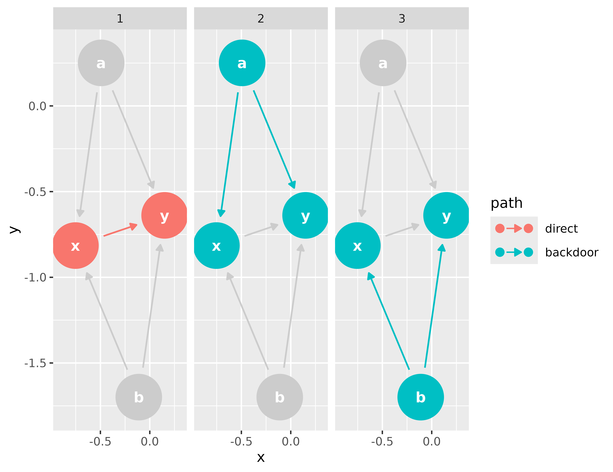
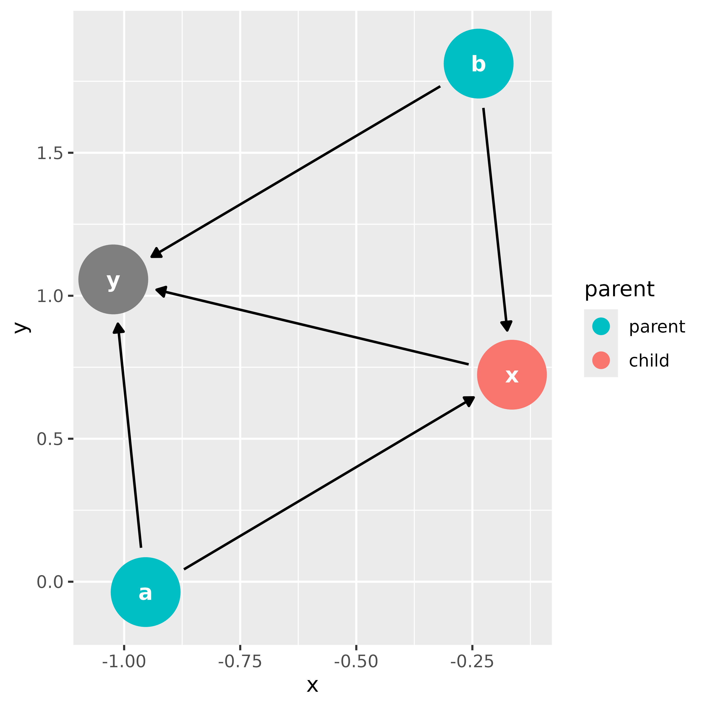
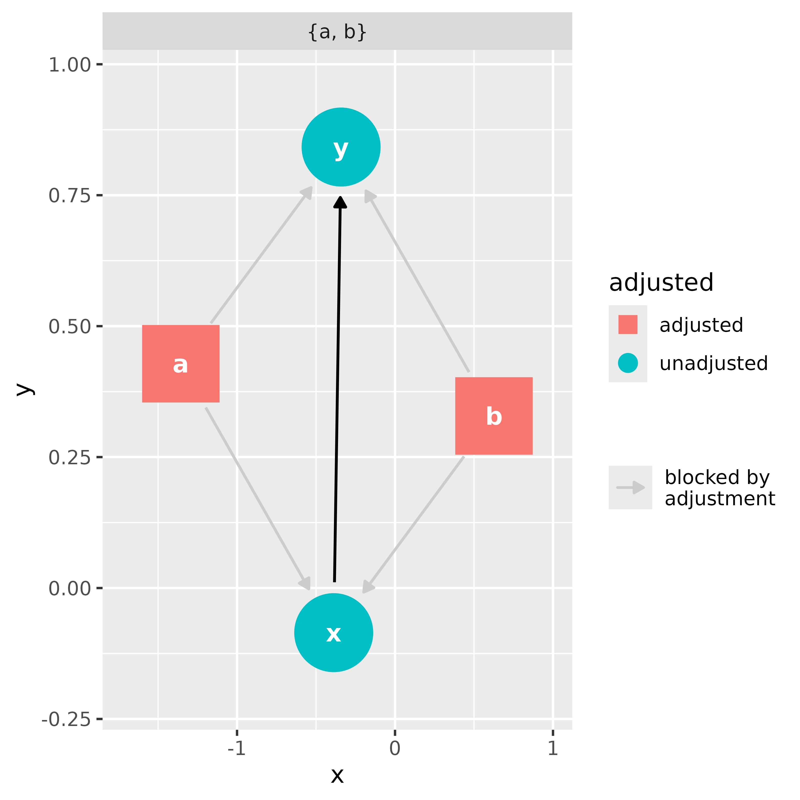
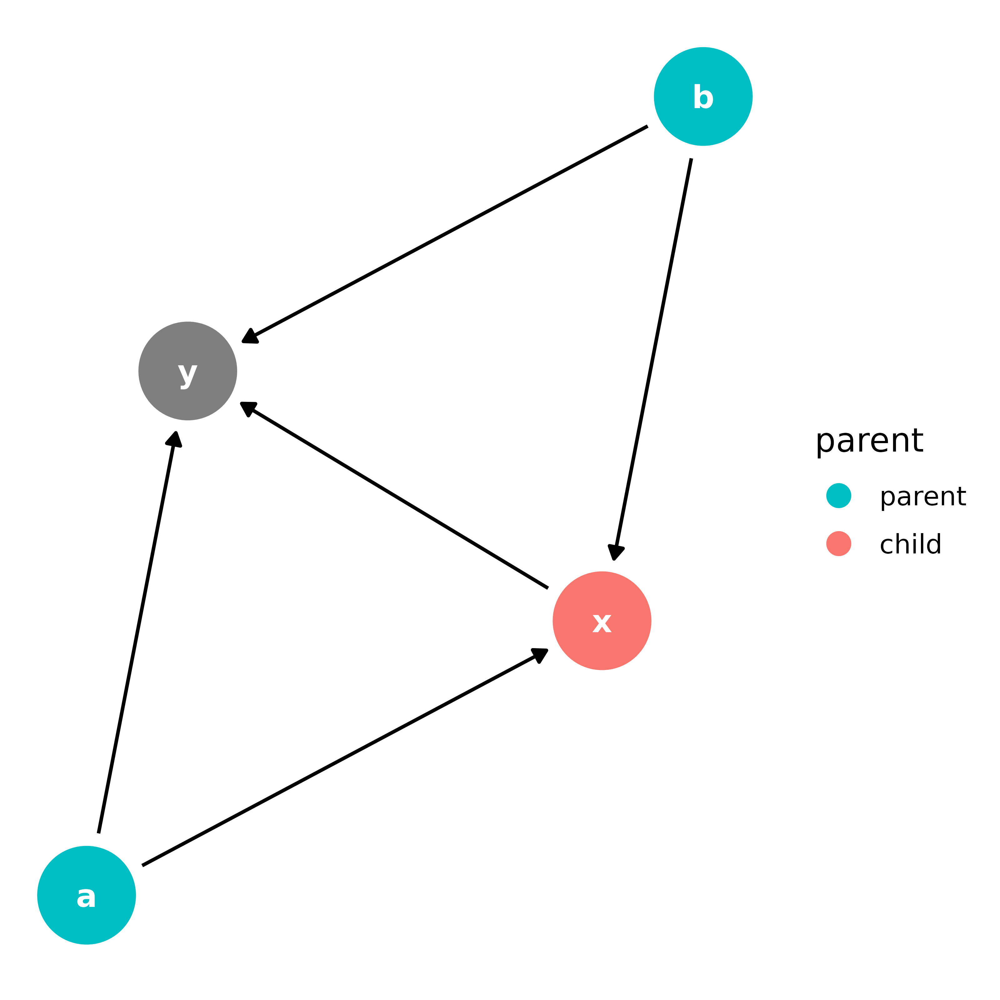
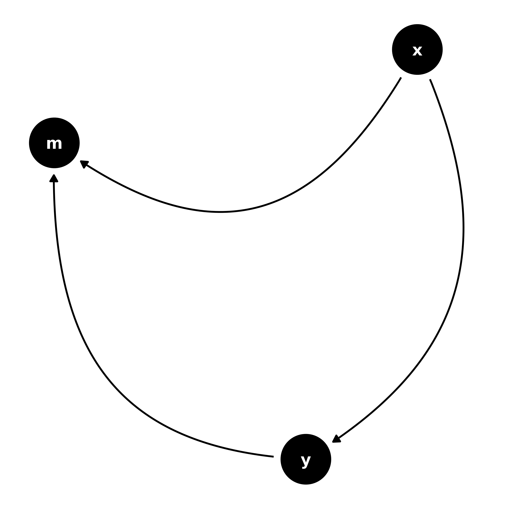
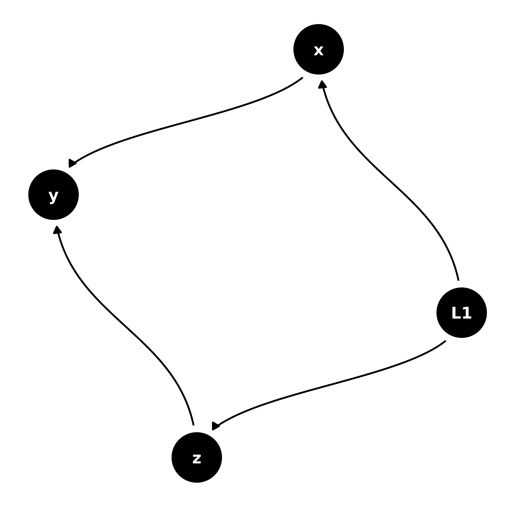

An Introduction to ggdag
Malcolm Barrett
2023-03-17
Source:vignettes/intro-to-ggdag.Rmd
intro-to-ggdag.RmdOverview
ggdag extends the powerful dagitty package
to work in the context of the tidyverse. It uses dagitty’s
algorithms for analyzing structural causal graphs to produce tidy
results, which can then be used in ggplot2 and
ggraph and manipulated with other tools from the tidyverse,
like dplyr.
Creating Directed Acyclic Graphs
If you already use dagitty, ggdag can tidy
your DAG directly.
library(dagitty)
library(ggdag)
library(ggplot2)
dag <- dagitty("dag{y <- z -> x}")
tidy_dagitty(dag)
#> # A DAG with 3 nodes and 2 edges
#> #
#> # A tibble: 4 × 8
#> name x y direction to xend yend circular
#> <chr> <dbl> <dbl> <fct> <chr> <dbl> <dbl> <lgl>
#> 1 x 1.71 1.22 NA NA NA NA FALSE
#> 2 y -0.115 -0.164 NA NA NA NA FALSE
#> 3 z 0.796 0.526 -> x 1.71 1.22 FALSE
#> 4 z 0.796 0.526 -> y -0.115 -0.164 FALSENote that, while dagitty supports a number of graph
types, ggdag currently only supports DAGs.
dagitty uses a syntax similar to the dot language of
graphviz. This syntax has the advantage of being compact, but
ggdag also provides the ability to create a
dagitty object using a more R-like formula syntax through
the dagify() function. dagify() accepts any
number of formulas to create a DAG. It also has options for declaring
which variables are exposures, outcomes, or latent, as well as
coordinates and labels for each node.
dagified <- dagify(x ~ z,
y ~ z,
exposure = "x",
outcome = "y"
)
tidy_dagitty(dagified)
#> # A DAG with 3 nodes and 2 edges
#> #
#> # Exposure: x
#> # Outcome: y
#> #
#> # A tibble: 4 × 8
#> name x y direction to xend yend circular
#> <chr> <dbl> <dbl> <fct> <chr> <dbl> <dbl> <lgl>
#> 1 x -2.47 -1.79 NA NA NA NA FALSE
#> 2 y -1.62 -3.91 NA NA NA NA FALSE
#> 3 z -2.04 -2.85 -> x -2.47 -1.79 FALSE
#> 4 z -2.04 -2.85 -> y -1.62 -3.91 FALSECurrently, ggdag supports directed (x ~ y)
and bi-directed (a ~~ b) relationships
tidy_dagitty() uses layout functions from
ggraph and igraph for coordinates if none are
provided, which can be specified with the layout argument.
Objects of class tidy_dagitty or dagitty can
be plotted quickly with ggdag(). If the DAG is not yet
tidied, ggdag() and most other quick plotting functions in
ggdag do so internally.
ggdag(dag, layout = "circle")A tidy_dagitty object is just a list with a
tbl_df, called data, and the
dagitty object, called dag:
tidy_dag <- tidy_dagitty(dagified)
str(tidy_dag)
#> List of 2
#> $ data: tibble [4 × 8] (S3: tbl_df/tbl/data.frame)
#> ..$ name : chr [1:4] "x" "y" "z" "z"
#> ..$ x : num [1:4] -1.44 -3.5 -2.48 -2.48
#> ..$ y : num [1:4] -0.9145 0.0805 -0.4158 -0.4158
#> ..$ direction: Factor w/ 3 levels "<-","->","<->": NA NA 2 2
#> ..$ to : chr [1:4] NA NA "x" "y"
#> ..$ xend : num [1:4] NA NA -1.44 -3.5
#> ..$ yend : num [1:4] NA NA -0.9145 0.0805
#> ..$ circular : logi [1:4] FALSE FALSE FALSE FALSE
#> $ dag : 'dagitty' Named chr "dag {\nx [exposure]\ny [outcome]\nz\nz -> x\nz -> y\n}\n"
#> - attr(*, "class")= chr "tidy_dagitty"Working with DAGs
Most of the analytic functions in dagitty have
extensions in ggdag and are named dag_*() or
node_*(), depending on if they are working with specific
nodes or the entire DAG. A simple example is
node_parents(), which adds a column to the to the
tidy_dagitty object about the parents of a given
variable:
node_parents(tidy_dag, "x")
#> # A DAG with 3 nodes and 2 edges
#> #
#> # Exposure: x
#> # Outcome: y
#> #
#> # A tibble: 4 × 9
#> name x y direction to xend yend circular parent
#> <chr> <dbl> <dbl> <fct> <chr> <dbl> <dbl> <lgl> <fct>
#> 1 x -1.44 -0.915 NA NA NA NA FALSE child
#> 2 y -3.50 0.0805 NA NA NA NA FALSE NA
#> 3 z -2.48 -0.416 -> x -1.44 -0.915 FALSE parent
#> 4 z -2.48 -0.416 -> y -3.50 0.0805 FALSE parentOr working with the entire DAG to produce a tidy_dagitty
that has all pathways between two variables:
bigger_dag <- dagify(y ~ x + a + b,
x ~ a + b,
exposure = "x",
outcome = "y"
)
# automatically searches the paths between the variables labelled exposure and
# outcome
dag_paths(bigger_dag)
#> # A DAG with 4 nodes and 15 edges
#> #
#> # Exposure: x
#> # Outcome: y
#> #
#> # A tibble: 20 × 10
#> set name x y direction to xend yend circular path
#> <chr> <chr> <dbl> <dbl> <fct> <chr> <dbl> <dbl> <lgl> <chr>
#> 1 1 a -0.584 -1.23 -> x -1.49 -0.612 FALSE NA
#> 2 1 a -0.584 -1.23 -> y -1.64 -1.52 FALSE NA
#> 3 1 b -2.54 -0.909 -> x -1.49 -0.612 FALSE NA
#> 4 1 b -2.54 -0.909 -> y -1.64 -1.52 FALSE NA
#> 5 1 x -1.49 -0.612 -> y -1.64 -1.52 FALSE open path
#> 6 1 y -1.64 -1.52 NA NA NA NA FALSE open path
#> 7 2 a -0.584 -1.23 -> x -1.49 -0.612 FALSE open path
#> 8 2 a -0.584 -1.23 -> y -1.64 -1.52 FALSE open path
#> 9 2 b -2.54 -0.909 -> x -1.49 -0.612 FALSE NA
#> 10 2 b -2.54 -0.909 -> y -1.64 -1.52 FALSE NA
#> 11 2 x -1.49 -0.612 -> y -1.64 -1.52 FALSE NA
#> 12 2 y -1.64 -1.52 NA NA NA NA FALSE open path
#> 13 2 x -1.49 -0.612 NA NA -1.64 -1.52 FALSE open path
#> 14 3 a -0.584 -1.23 -> x -1.49 -0.612 FALSE NA
#> 15 3 a -0.584 -1.23 -> y -1.64 -1.52 FALSE NA
#> 16 3 b -2.54 -0.909 -> x -1.49 -0.612 FALSE open path
#> 17 3 b -2.54 -0.909 -> y -1.64 -1.52 FALSE open path
#> 18 3 x -1.49 -0.612 -> y -1.64 -1.52 FALSE NA
#> 19 3 y -1.64 -1.52 NA NA NA NA FALSE open path
#> 20 3 x -1.49 -0.612 NA NA -1.64 -1.52 FALSE open pathggdag also supports piping of functions and
includes the pipe internally (so you don’t need to load
dplyr or magrittr). Basic dplyr
verbs are also supported (and anything more complex can be done directly
on the data object).
Plotting DAGs
Most dag_*() and node_*() functions have
corresponding ggdag_*() for quickly plotting the results.
They call the corresponding dag_*() or
node_*() function internally and plot the results in
ggplot2.
ggdag_paths(bigger_dag)
ggdag_parents(bigger_dag, "x")
# quickly get the miniminally sufficient adjustment sets to adjust for when
# analyzing the effect of x on y
ggdag_adjustment_set(bigger_dag)
Plotting directly in ggplot2
ggdag() and friends are, by and large, fairly thin
wrappers around included ggplot2 geoms for plotting nodes,
text, and edges to and from variables. For example,
ggdag_parents() can be made directly in
ggplot2 like this:
bigger_dag %>%
node_parents("x") %>%
ggplot(aes(x = x, y = y, xend = xend, yend = yend, color = parent)) +
geom_dag_point() +
geom_dag_edges() +
geom_dag_text(col = "white") +
theme_dag() +
scale_color_hue(breaks = c("parent", "child")) # ignores NA in legend
The heavy lifters in ggdag are
geom_dag_node()/geom_dag_point(),
geom_dag_edges(), geom_dag_text(),
theme_dag(), and scale_adjusted().
geom_dag_node() and geom_dag_text() plot the
nodes and text, respectively, and are only modifications of
geom_point() and geom_text().
geom_dag_node() is slightly stylized (it has an internal
white circle), while geom_dag_point() looks more like
geom_point() with a larger size. theme_dag()
removes all axes and ticks, since those have little meaning in a causal
model, and also makes a few other changes. expand_plot() is
a convenience function that makes modifications to the scale of the plot
to make them more amenable to nodes with large points and text
scale_adjusted() provides defaults that are common in
analyses of DAGs, e.g. setting the shape of adjusted variables to a
square.
geom_dag_edges() is also a convenience function that
plots directed and bi-directed edges with different geoms and arrows.
Directed edges are straight lines with a single arrow head, while
bi-directed lines, which are a shorthand for a latent parent variable
between the two bi-directed variables (e.g. a <- L -> b), are
plotted as an arc with arrow heads on either side.
You can also call edge functions directly, particularly if you only
have directed edges. Much of ggdag’s edge functionality
comes from ggraph, with defaults (e.g. arrow heads,
truncated lines) set with DAGs in mind. Currently, ggdag
has four type of edge geoms: geom_dag_edges_link(), which
plots straight lines, geom_dag_edges_arc(),
geom_dag_edges_diagonal(), and
geom_dag_edges_fan().
dagify(
y ~ x,
m ~ x + y
) %>%
ggplot(aes(x = x, y = y, xend = xend, yend = yend)) +
geom_dag_point() +
geom_dag_edges_arc() +
geom_dag_text() +
theme_dag()
If you have bi-directed edges but would like to plot them as
directed, node_canonical() will automatically insert the
latent variable for you.
dagify(
y ~ x + z,
x ~ ~z
) %>%
node_canonical() %>%
ggplot(aes(x = x, y = y, xend = xend, yend = yend)) +
geom_dag_point() +
geom_dag_edges_diagonal() +
geom_dag_text() +
theme_dag()
There are also geoms based on those in ggrepel for
inserting text and labels, and a special geom called
geom_dag_collider_edges() that highlights any biasing
pathways opened by adjusting for collider nodes. See the vignette introducing DAGs for more
info.